Unitree A2
사족보행 로봇
A2 Standard를 처음 운용할 때 필요한 안전 수칙과 기동 전 점검, 리모컨 조작, 종료 및 충전 절차를 정리했습니다.
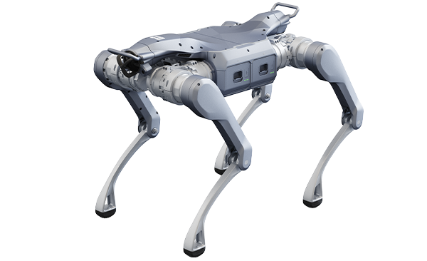
이 안내서에 대하여
| 로봇 | Unitree A2 Standard |
| 근거 문서 | Unitree A2 Standard 한국어 시작 안내서 · 2026년 11월 |
| 판 | 한국어판 · 2026.11.27 |
| 문의 | go.support@wego-robotics.com |
제품 개요 및 사양
A2는 순찰, 이동 플랫폼 및 연구개발 등 산업용 응용 분야를 위한 사족보행 로봇입니다. A2 Standard 모델에는 LiDAR 1대와 고해상도 카메라 1대가 장착되어 있으며, 이동 제어 및 외부 장치 확장 인터페이스를 제공합니다.
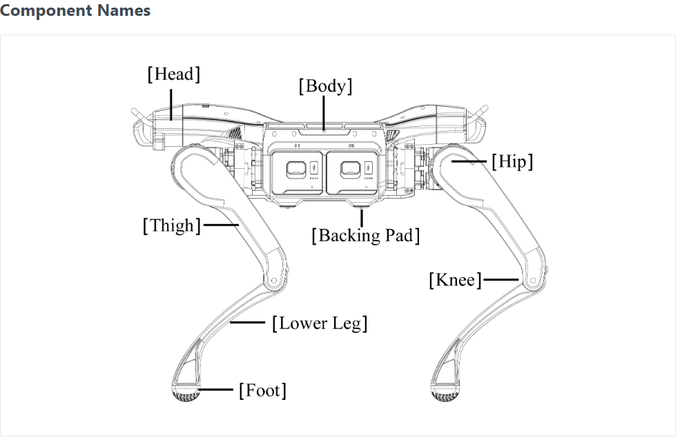
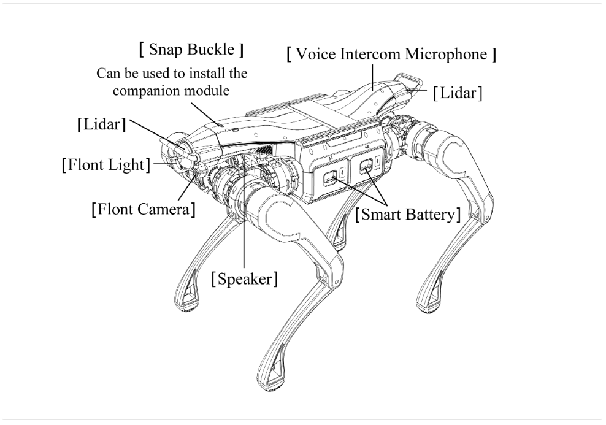
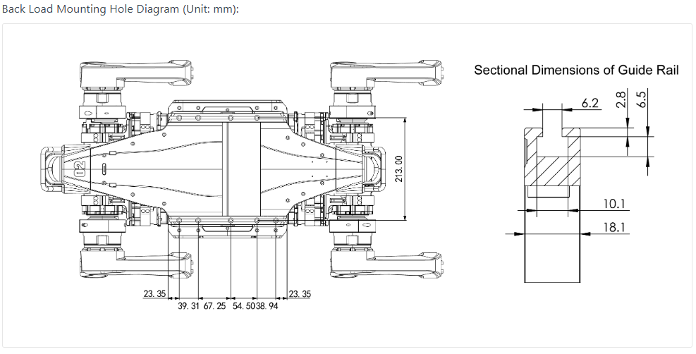
주요 기술 사양 (A2 Standard)
| 항목 | 사양 |
|---|---|
| 기립 시 크기 | 820 × 440 × 570 mm |
| 엎드린 자세 크기 | 720 × 550 × 220 mm |
| 본체 무게 | 약 42 kg(배터리 포함); 약 35 kg(배터리 제외) |
| 관절 자유도 | 12 |
| 최대 관절 토크 | 약 180 N·m |
| 배터리 | 단일 배터리 9000 mAh / 453.6 Wh; 듀얼 배터리 18000 mAh / 907.2 Wh |
| 동작 전압 | 50.4 V |
| 사용 온도 | -20 ℃–55 ℃ |
| 보호 등급 | IP56 |
| 센서 | LiDAR 1대, 고해상도 카메라 1대 |
| 무선 연결 | Wi-Fi 6, Bluetooth 5.2 |
| 정격 연속 보행 적재 하중 | 약 25 kg; 최대 정적 기립 하중 약 100 kg |
| 정격 속도 | 0–3.7 m/s; 특정 구성에서 최대 5 m/s |
| 정격 경사/단차 | 약 45° / 30 cm |
| 정격 운용 시간/거리 | 무부하 약 5시간/20 km; 25 kg 적재 시 약 3시간/12.5 km |
중요 안전 수칙
- 교육을 받은 성인만 조작해야 하며, 18세 미만은 단독으로 조작할 수 없습니다.
- 로봇이 이동하는 동안 항상 시야 내에서 관찰하고, 보행자·어린이·반려동물·파손되기 쉬운 물체와 거리를 유지하십시오.
- 복잡한 동작을 실행하기 전에 로봇 전방의 직경 2 m 반원 구역에 사람이나 장애물이 없는지 확인하십시오.
- 엎드린 자세에서 일어서기 전에 로봇 주변 직경 2 m 범위에 사람이나 물체가 없는지 확인하십시오.
- 동작 모드를 전환하기 전에 로봇이 안정된 자세인지 확인하고 주변 최소 1 m 이내에 사람이 없도록 하십시오.
- 마찰이 비정상적으로 큰 지면, 무른 지면, 미끄러운 곳, 자갈길, 급경사 및 장애물이 많은 환경에서 고속 주행하지 마십시오.
- 끼임 사고를 방지하기 위해 관절이나 구동부에 손을 넣지 마십시오.
- 위험한 개조, 승인되지 않은 분해 및 제품 설계 목적을 벗어난 사용을 금지합니다.
상위 애플리케이션과 조종기가 동시에 로봇을 제어하면 명령 충돌이 발생할 수 있습니다. 개발 기능 사용 시 제어 권한을 명확히 구분하십시오.
IP56을 침수 방지 등급으로 해석해서는 안 됩니다. 배터리함 및 커넥터에 물이 유입되지 않도록 하십시오.
사용 환경
- 최초 기동 및 조작 연습은 넓고 평평하며 단단한 지면에서 실시하십시오.
- 고압 전선, 송신탑, 강한 전자기 간섭 및 심한 Wi-Fi 간섭이 있는 장소를 피하십시오.
- 비·눈·강풍·낙뢰 등 악천후를 피하십시오. 수분이 있는 환경에서 사용할 때는 방수 등급의 제한을 준수해야 하며, A2 본체의 표기 등급은 IP56입니다.
- 동반 추종 모드는 계단이나 높은 단차에 적합하지 않으며, 좁고 혼잡한 구역에서는 사용하지 마십시오.
하드웨어 구성 및 확장 인터페이스
A2 양측에는 SDK 확장 인터페이스가 있습니다. 사용 전에 커넥터 유형, 전원 공급 방향, 전압 및 전류 제한을 확인하십시오.
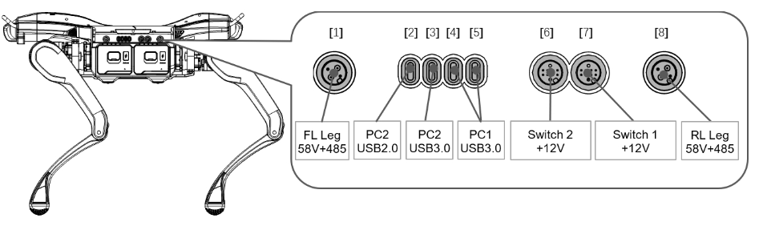
| No. | 인터페이스 유형 | 인터페이스 명칭 | 인터페이스 사양 |
|---|---|---|---|
| [1] | RS485 2+2 PIN Aviation Plug | 전방 좌측 다리 전원 케이블 | 58V |
| [2] | USB 2.0 Type-C | PC2 USB 2.0 인터페이스 + DP | 최대 20V 1A |
| [3] | USB 3.0 Type-C | PC2 표준 USB 인터페이스 | 전류 제한 1A |
| [4] | USB 3.0 Type-C | PC1 USB 3.0 인터페이스 | 포트당 전류 제한 2A |
| [5] | USB 3.0 Type-C | PC1 USB 3.0 인터페이스 | 포트당 전류 제한 2A |
| [6] | T568 8+2 PIN Aviation Plug | Switch 2 Network Port 192.168.124.0/24 | 1000 BASE-T +12V |
| [7] | T568 8+2 PIN Aviation Plug | Switch 1 Network Port 192.168.123.0/24 | 1000 BASE-T +12V |
| [8] | RS485 2+2 PIN Aviation Plug | 후방 좌측 다리 전원 케이블 | 58V |
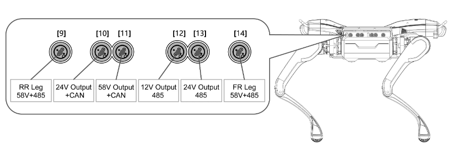
| No. | 인터페이스 유형 | 인터페이스 명칭 | 인터페이스 사양 |
|---|---|---|---|
| [9] | RS485 2+2 PIN Aviation Plug | 후방 우측 다리 전원 케이블 | 58V |
| [10] | CAN 2+2 PIN Aviation Plug | 정전압 전원 출력 | 24V 5A |
| [11] | CAN 2+2 PIN Aviation Plug | 배터리 전원 출력 | 배터리 전압(58V) 10A |
| [12] | 485 2+2 PIN Aviation Plug | 정전압 전원 출력 | 12V 6A |
| [13] | 485 2+2 PIN Aviation Plug | 정전압 전원 출력 | 24V 6A |
| [14] | RS485 2+2 PIN Aviation Plug | 전방 우측 다리 전원 케이블 | 58V 최대 10A |
개봉 및 기동 전 점검
4.1 포장 개봉
- 운송 상자를 평평한 곳에 놓고 포장 표시 방향에 따라 개봉하십시오.
- 로봇, 조종기, 충전기 및 부속품을 꺼내 납품 목록과 하나씩 대조하십시오.
- 로봇을 평평하고 장애물이 없는 바닥에 놓으십시오.
- 추후 운송을 위해 원래 포장재와 완충재를 보관하십시오.
4.2 매 기동 전 점검
- 외장, 네 다리, 발 패드 및 체결 부품에 손상이나 풀림이 없는지 확인하십시오.
- 배터리 잔량이 충분하고 잠금장치가 체결되었는지, 조종기 잔량이 충분한지 확인하십시오.
- 로봇 주변에 잡동사니, 고인 물 또는 관절에 감길 수 있는 케이블이 없는지 확인하십시오.
- 무선 통신 환경과 조종기 연결 상태가 정상인지 확인하십시오.
- 조작자가 정지 및 비상 대응 방법을 숙지했는지 확인하십시오.
4.3 배터리 장착 및 초기 자세
1단계: 배터리 장착
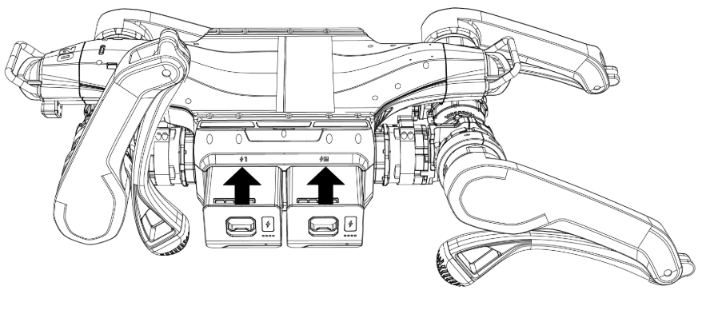
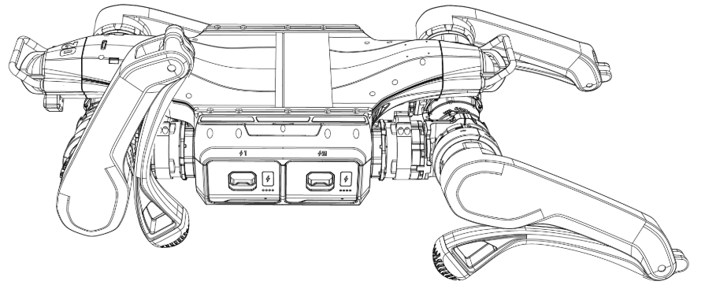
2단계: 로봇 배치
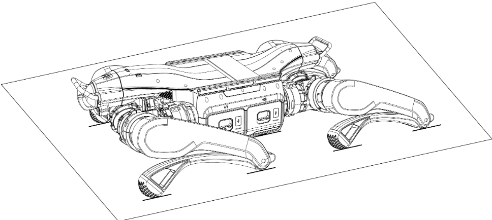
- A2를 평평한 바닥에 놓으십시오.
- 올바른 방향으로 배터리를 삽입하고 “딸깍” 소리가 나며 잠길 때까지 밀어 넣으십시오.
- 로봇의 네 다리가 설명서에 표시된 자연스러운 엎드린 자세인지 확인하고, 다리가 몸체 아래에 눌리지 않도록 하십시오.
로봇 기동 및 기본 제어
5.1 전원 켜기
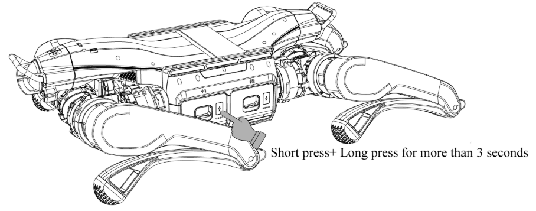
- 로봇을 올바른 자세로 평평한 바닥에 놓고 주변에 사람과 장애물이 없는지 확인하십시오.
- 배터리 전원 버튼을 짧게 한 번 누른 후 3초 이상 길게 눌러 로봇을 켜십시오.
- 약 2분간 기다리면 로봇이 기동을 완료한 뒤 자동으로 일어섭니다.
- 자세가 안정되었는지 확인한 다음 조종을 시작하십시오.
기동에 실패하면 엎드린 자세와 배터리 잠금 상태를 먼저 확인하십시오.
5.2 화면형 조종기
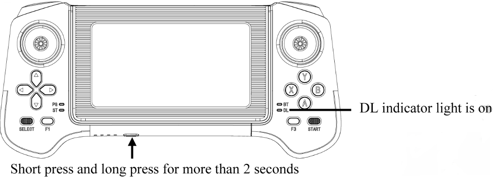
조종기 전원 버튼을 짧게 한 번 누른 다음 2초 이상 길게 누르십시오. 알림음이 울리면 조종기가 켜집니다. 연결에 성공하면 우측 DL 표시등이 켜집니다. 이후 조종기로 로봇을 제어할 수 있습니다.
5.2.1 조종기 구성 및 주요 버튼
A2에는 R3 화면형 조종기가 제공됩니다. 좌우 스틱, L1/L2, R1/R2, 방향키, X/Y/A/B, SELECT, START, F1, F3, 전원 버튼, USB Type-C 충전 포트 및 별도의 비상정지 버튼이 있습니다. 조종기는 데이터 전송 모듈을 통해 로봇과 통신하며, 최초 사용 시 Unitree Explore App(제9장 다운로드 안내 참조)에서 바인딩해야 합니다.
R3 조종기 주요 버튼
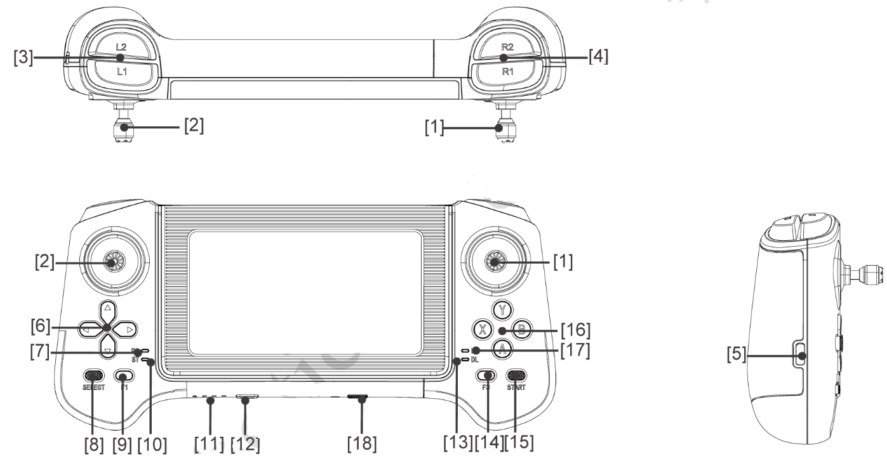
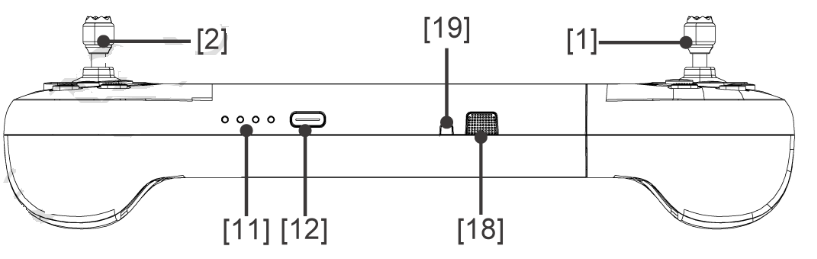
| 번호 | 부품 |
|---|---|
| 1 | Right Rocker |
| 2 | Left Rocker |
| 3 | Key L1/L2 |
| 4 | Key R1/R2 |
| 5 | Type C Charging Interface |
| 6 | Left Key |
| 7 | Power Connect Indicator |
| 8 | SELECT |
| 9 | F1(Function Setting Key) |
| 10 | Charging Status Indicator |
| 11 | Power Connect Indicator |
| 12 | Power Button |
| 13 | Data Transmission Indicator Light |
| 14 | F3 (Function Setting Key) |
| 15 | START |
| 16 | Right Key |
| 17 | Bluetooth Signal Indicator Light |
| 18 | Emergency Stop Button |
| 19 | Emergency Stop Indicator Light |
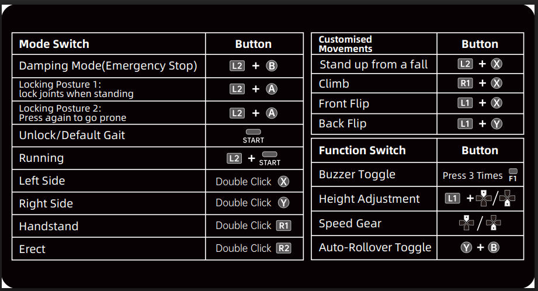
5.2.2 스틱 장착 및 조종기 전원 켜기/끄기
- 조종기 보관 슬롯에서 스틱 2개를 꺼내 좌우 스틱 장착부에 맞춘 후 시계 방향으로 돌려 고정하십시오. 보관 시에는 반대로 풀어 슬롯에 넣으십시오.
- 전원 켜기: 전원 버튼을 짧게 한 번 누른 후 2초 이상 길게 누릅니다. 알림음 2회가 들리면 켜진 상태입니다.
- 전원 끄기: 전원 버튼을 짧게 한 번 누른 후 2초 이상 길게 누릅니다. 알림음 3회가 들리면 꺼진 상태입니다.
- 로봇 또는 휴대전화와 연결되지 않은 상태에서 조작하지 않으면 약 10분 후 자동으로 꺼집니다.
5.2.3 최초 바인딩 및 연결 상태
- Unitree Explore App에서 Device → Data → Remote Control로 이동하여 해당 조종기 코드를 입력하십시오.
- 조종기의 SELECT 버튼을 3초 이상 길게 누릅니다. 알림음 4회가 들리면 로봇의 데이터 전송 모듈과 바인딩됩니다.
- 조종기를 재시작하여 바인딩을 적용하십시오. 연결에 성공하면 우측 DL 데이터 전송 표시등이 켜집니다.
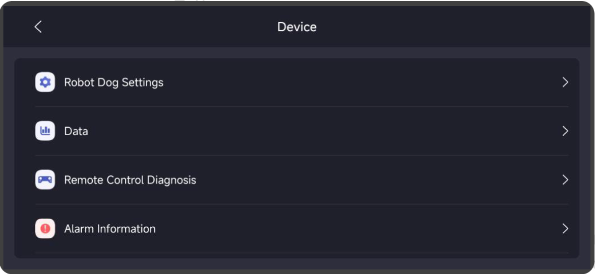
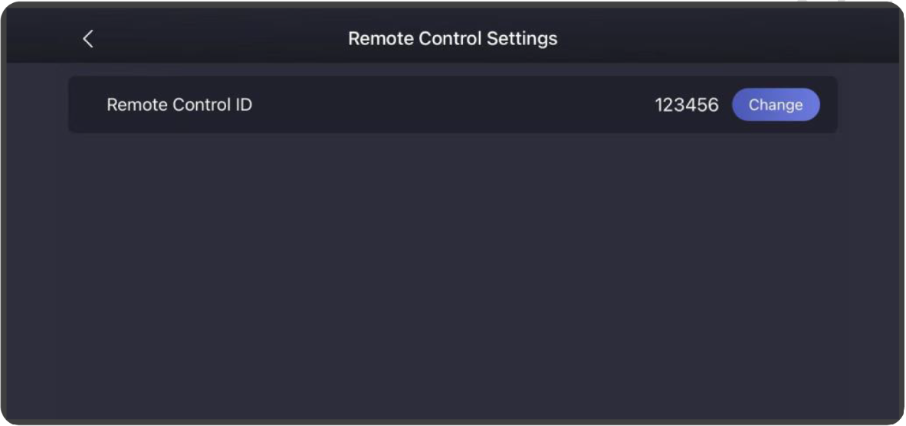
5.2.4 비상정지 버튼 및 표시등
조종기 중앙의 물리적 비상정지 버튼을 누르면 비상정지 표시등이 빨간색으로 바뀌며 조종기에서 비상정지가 활성화됩니다. 다시 누르면 조종기 측 비상정지 상태가 해제되고 표시등이 녹색으로 바뀝니다. 두 번의 누름 사이에는 최소 3초 간격을 두십시오.
비상정지 표시등이 깜박이면 조종기가 로봇과 연결되지 않은 상태이며, 계속 켜져 있으면 연결되어 비상정지 기능을 사용할 준비가 된 상태입니다. 공식 안내에 따르면 비상정지 후 정상 이동 제어를 재개하려면 로봇을 재시작해야 합니다.
비상정지 버튼을 해제했다고 로봇이 자동으로 움직임을 재개하는 것은 아닙니다. 현장 안전을 확인한 뒤 공식 절차에 따라 재시작하십시오. L2 + B는 댐핑 모드 단축키로, 물리적 비상정지와 다릅니다.
5.2.5 조종기 충전, 피드백 설정 및 스틱 보정
충전: 조종기를 끈 상태에서 규격에 맞는 USB Type-C 케이블과 권장 5 V / 2 A 충전기를 사용하십시오. 충전 표시등은 약 1 Hz로 깜박이며, 배터리 잔량 표시등이 모두 켜지면 완충 상태입니다. 조종기 배터리 정격 용량은 780 mAh, 사용 시간은 약 5시간, 개방된 환경에서 정격 제어 거리는 100 m 이상입니다.
피드백 설정: F3를 빠르게 3회 누르면 진동/소리 피드백 모드를 전환합니다. F1을 빠르게 3회 누르면 소리 및 진동 피드백을 켜거나 끕니다. 변경 사항은 기본적으로 저장되지 않으며, 다음 사용에도 적용하려면 종료 시 F1을 누른 상태로 현재 모드를 저장하십시오.
스틱 보정: 양쪽 스틱을 건드리지 않은 상태에서 F1과 F3를 동시에 눌렀다가 놓습니다. 연속 알림음이 들리면 좌우 스틱을 최대 범위까지 움직이고 여러 차례 회전시킵니다. 알림음이 멈추면 F3를 한 번 눌러 보정을 적용합니다. 보정 모드 진입 전에는 스틱을 건드리지 마십시오.
5.3 조종기 이동 제어 및 기능 단축키
5.3.1 기본 이동
| 조작 | 로봇 동작 |
|---|---|
| 좌측 스틱 앞/뒤 | 전진/후진 |
| 좌측 스틱 좌/우 | 좌측/우측 횡이동 |
| 우측 스틱 좌/우 | 제자리 좌회전/우회전 |
| 스틱에서 손을 떼어 중앙 복귀 | 중립 위치로 돌아가 해당 방향 이동 명령 중지 |
스틱은 천천히 조작하고 넓고 평평한 장소에서 먼저 연습하십시오. 벽, 문 및 장애물은 조종기 신호를 약화시킬 수 있습니다.
5.3.2 자세 및 이동 모드
| 버튼 조합 | 기능 |
|---|---|
| L2 길게 누름 + B 한 번 | 댐핑 모드(Damping Mode); 물리적 비상정지와 다름 |
| L2 길게 누름 + A 한 번(첫 번째) | 기립 상태에서 관절 자세 고정 |
| L2 길게 누름 + A 한 번(다시) | 엎드린 자세로 전환 |
| START 한 번 | 잠금 해제/기본 보행 |
| L2 길게 누름 + START 한 번 | 달리기 모드 |
| X 두 번; START로 종료 | 왼쪽으로 눕기 |
| Y 두 번; START로 종료 | 오른쪽으로 눕기 |
| R1 두 번; START로 종료 | 물구나무서기 동작 |
| R2 두 번; START로 종료 | 직립 동작 |
5.3.3 고급 동작 및 설정
| 버튼 조합 | 기능 |
|---|---|
| L2 길게 누름 + X 한 번 | 넘어진 상태에서 일어나기 |
| R1 길게 누름 + X 한 번; START로 종료 | 등반 동작 |
| L1 길게 누름 + X 한 번; START로 종료 | 앞 공중제비 |
| L1 길게 누름 + Y 한 번; START로 종료 | 뒤 공중제비 |
| L1 길게 누름 + 방향키 위/아래; START로 종료 | 본체 높이 조절 |
| 방향키 위/아래 | 속도 단계 전환 |
| Y 길게 누름 + B 한 번 | 자동 자세 복구 기능 켜기/끄기 |
고위험 동작(공중제비, 물구나무서기, 등반, 넘어짐 복구)은 장비 손상이나 인명 피해를 일으킬 수 있습니다. 고객 최초 납품 교육 시 시연을 권장하지 않으며, 주변을 충분히 비우고 제조사 조건을 충족한 뒤 교육받은 인원만 수행해야 합니다. 펌웨어나 구성에 따라 사용 가능한 동작이 다를 수 있습니다.
로봇 전원 끄기, 충전 및 운송 포장
6.1 정상 종료
- 평평한 바닥에서 로봇을 정지시키고 안정된 기립 자세를 유지하십시오.
- L2 + A 조합을 두 번 실행하여 관절 자세 고정과 엎드리기 동작을 순서대로 수행하십시오.
- 안전한 엎드린 자세인지 확인한 뒤 배터리 전원 버튼을 짧게 한 번 누르고 3초 이상 길게 눌러 종료하십시오.
- 전원이 꺼졌는지 확인한 뒤 배터리 잠금장치를 눌러 배터리를 분리하십시오.
서 있거나 이동하는 동안 전원을 직접 차단하지 마십시오. 로봇이 갑자기 쓰러질 수 있습니다.
6.2 로봇 배터리 충전
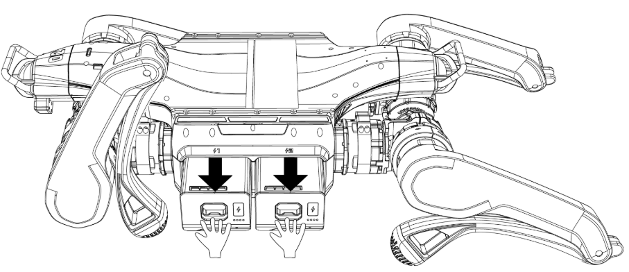
배터리 잠금장치를 누른 상태에서 A2 본체에서 배터리를 분리하십시오.
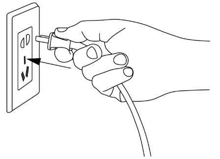
충전기를 먼저 AC 전원에 연결하십시오.
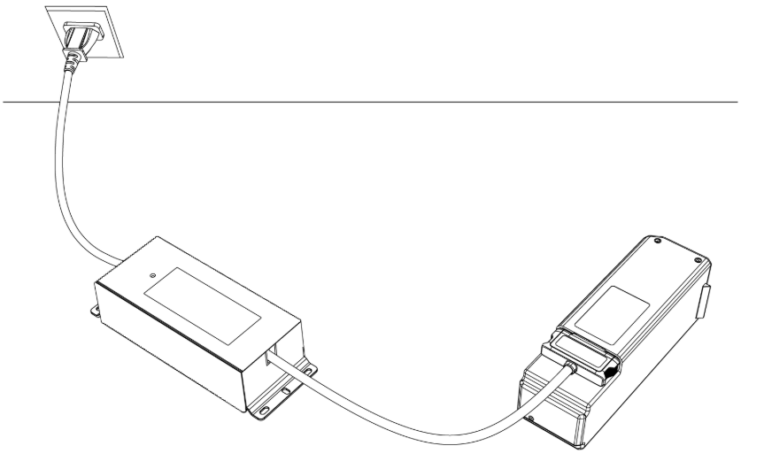
그림 9. 배터리 분리 및 충전기 연결 순서 (Unitree 문서) A2 배터리를 연결하십시오.
- 로봇을 끄고 모든 움직임이 멈출 때까지 기다리십시오.
- 배터리 잠금장치를 눌러 본체에서 배터리를 분리하십시오.
- 배터리, 충전 케이블 및 커넥터에 손상이 없는지 확인하고 배터리 전원이 꺼져 있는지 확인하십시오.
- 정품 충전기를 100–240 V, 50/60 Hz AC 전원에 연결하십시오.
- 그다음 충전기를 배터리에 연결하고 표시등을 확인하십시오.
- 충전 중에는 표시등이 약 1 Hz로 깜박이며, 완충되면 표시등이 꺼집니다.
- 완충 후 배터리와 충전기를 분리하고 필요에 따라 배터리를 다시 장착하십시오.
충전 전 반드시 배터리를 분리하십시오. 로봇 사용 후 배터리가 뜨거울 수 있으므로 실온까지 식힌 뒤 충전하십시오.
6.3 운송 포장
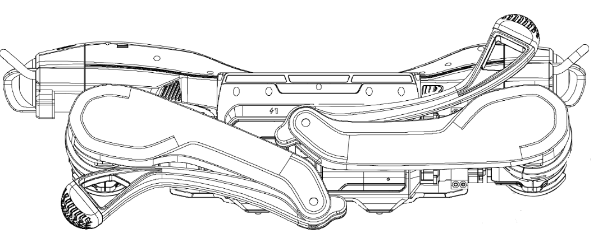
제조사 포장 그림에 표시된 위치로 네 다리를 접으십시오. 로봇을 운송 상자 하단에 넣고 부속품과 조종기를 배치한 다음 완충재가 제자리에 있는지 확인하고 상자 덮개를 닫으십시오.
고장 및 이상 대응
| 증상 | 조치 방법 |
|---|---|
| 기동 후 약 2분이 지나도 일어서지 않음 | 배터리, 초기 자세, 전원 상태를 확인하고 재시작 후에도 이상이 지속되면 기술 지원 문의 |
| 보행 중 자체 보호 기능 작동 | 조작을 중지하고 지면 저항, 외부 간섭, 자세 및 발 패드를 점검 |
| 조종기로 엎드린 자세 전환 불가 | 주변 인원을 대피시키고 필요 시 배터리 전원 버튼으로 강제 종료; 로봇이 넘어질 수 있음 |
| 전원 켠 후 기립 불가 | 설명서대로 올바른 초기 자세로 복귀시킨 뒤 재시작; 계속 실패하면 제조사 문의 |
| 장시간 기립 상태 유지 | 장시간 정적 기립을 피하고 안내에 따라 엎드린 자세/댐핑 모드로 전환 |
공식 지원: support.unitree.com. 고객 현장에서는 WEGO 납품/AS 담당자에게 먼저 문의하십시오.
청소, 점검 및 보관
8.1 청소
- 전원을 끄고, 배터리를 분리하기 전에 배터리함과 로봇 외부가 건조한지 확인하십시오.
- 깨끗하고 부드러운 천으로 본체를 닦으십시오. 잘 지워지지 않는 오염에는 소량의 순한 세제를 사용할 수 있습니다.
- 철제 브러시, 사포 또는 강한 부식성 용제를 사용하지 마십시오.
- 청소 후 물기를 제거하고 커넥터 및 관절 틈으로 물이 들어가지 않도록 하십시오.
8.2 일상 점검
| 점검 항목 | 내용 |
|---|---|
| 본체 외관 | 균열, 변형, 풀림, 이물질 여부 |
| 다리 및 관절 | 연결부, 체결부, 이상 소음 및 구동 저항 |
| 발 패드 | 마모, 파손 및 접지력 |
| 배터리 | 외장 손상, 이상 발열, 접촉면 청결 |
| 조종기 | 스틱 중립 복귀, 버튼 및 배터리 잔량 |
| 냉각 팬 | 정상 작동 및 이상 소음 여부 |
8.3 보관
- 건조하고 서늘하며 통풍이 잘되는 곳에 보관하고 비와 직사광선을 피하십시오.
- 배터리를 40℃를 초과하는 고온 환경에 두지 마십시오.
- 장기 보관 시 배터리 잔량을 정기적으로 확인하십시오. 제조사는 잔량이 30% 미만이면 약 70%까지 충전한 후 보관할 것을 권장합니다.
- 배터리를 완전히 방전한 상태로 장기간 보관하지 마십시오.
앱 다운로드(해외용)
빠른 참조
| 조작 | 핵심 절차 |
|---|---|
| 전원 켜기 | 평평한 지면에서 엎드리기 → 배터리 버튼 짧게 누른 후 3초 이상 길게 누르기 → 약 2분 대기 |
| 조종기 | 짧게 누른 후 2초 이상 길게 누르기 → DL 표시등 확인 |
| 추종 | 동반 조종기를 오른쪽에 착용 → 로봇 우측 0.2–0.6 m 위치 → M 버튼 |
| 전원 끄기 | 평지에서 안정적으로 기립 → L2+A 두 번으로 엎드리기 → 배터리 버튼 짧게 누른 후 3초 이상 길게 누르기 |
| 충전 | 전원 끄고 배터리 분리 → AC 전원 연결 → 배터리 연결 → 완충 후 분리 |